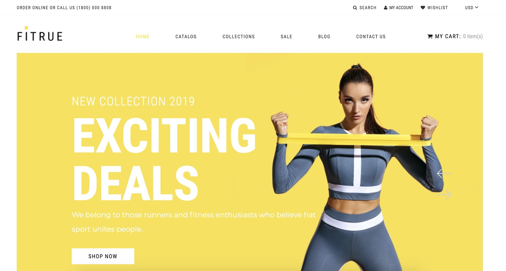

Hi! I’m Andrea Salusso.
I started getting interested in data analysis during Covid: I came back from London where I was working as a waiter in a 3 Michelin Stars restaurant and I started working on a personal project. This project consisted in creating an E-commerce website built on the Shopify platform in order to sell Fitness apparel. I was spending the whole day on it, trying to scrape data from websites and understand how I could exploit the latest trends to reach more audiences.
Back then I still wasn’t aware that one day I would start a career in data analysis, I was just trying to understand Facebook analytics insights to improve my marketing campaigns.
As soon as I started university at H-Farm College, especially after the first data-centred courses, I realized the power of data and how we can utilize data to get the answer we are looking for.
I learned how to use Excel, SQL, Python and R through university and online courses and projects, through a process of trial and error, because in my opinion, there’s always a solution to get to your goal!